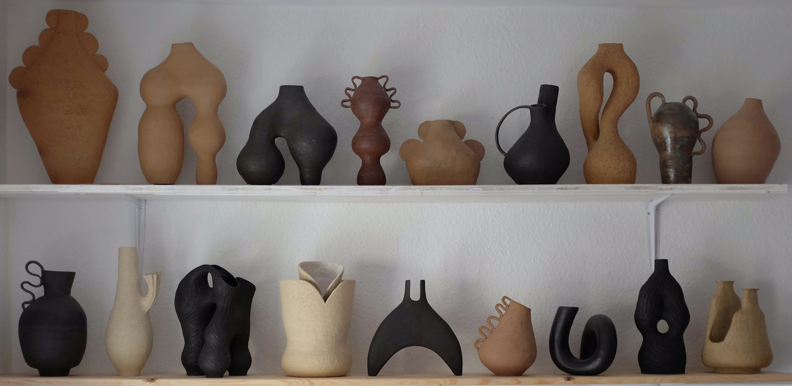

Feral Bodies is an original collection of experiments done around traditional vases. Attempting to create outlandish objects, the vessels were created with irregular shapes, exaggerated textures and unusual handles.
FERAL BODIES
Collection '0' 01-10.2020

Sculpture & Vases